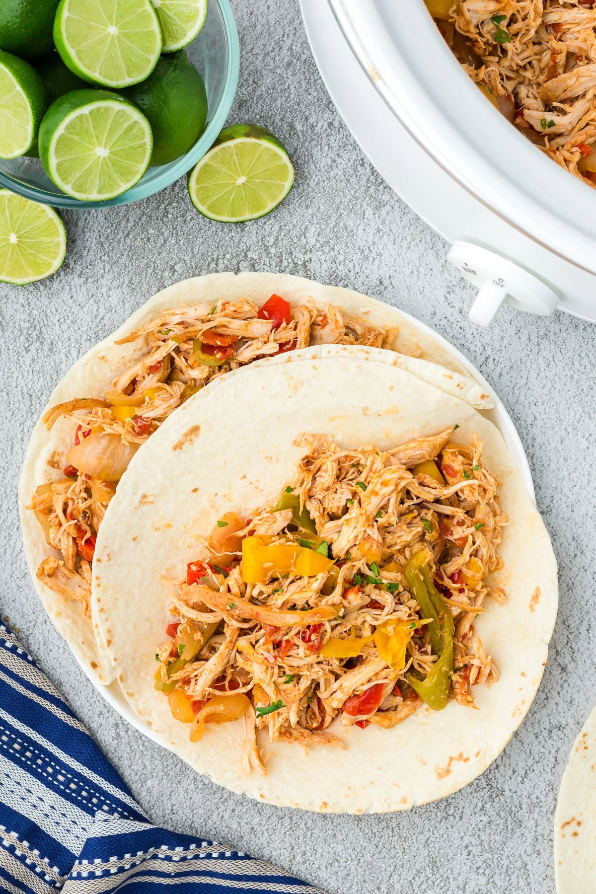

Fajita Chicken

An incredibly easy Tex-Mex style recipe that uses a slow cooker to make tender and flavorful chicken fajitas
with peppers and onions.
If you're looking for a super easy, delicious, slow cooker fajita chicken recipe, then look no further! This
recipes is in the slow cooker in under 30 minutes, and it only requires cutting up a few veggies.
This recipe is great for leftovers, and you can mix it up by having it as a burrito, tacos, salad, and more!
Ingredients
- 1 red bell pepper, sliced
- 1 yellow bell pepper, sliced
- 1 green bell pepper, sliced
- 1 yellow onion, sliced
- 2 lb boneless, skinless chicken breasts
- 2 tablespoons taco seasoning
- 4 cloves of garlic, minced
- 1 lime
- 10 oz canned diced tomatoes with green chiles, drained
Preparation
- Add half of the sliced peppers and onions to the slow cooker. Place the chicken on top and sprinkle on both
sides with the taco seasoning. Add the garlic, juice of half the lime, and canned tomatoes, then the
remaining peppers and onion and juice from the remaining lime half.
- Cook on high for 3-4 hours.
- Remove chicken and cut/shred into slices (chicken cooked longer will tend to shred more, cook to your
preference).
- Return the sliced chicken to the slow cooker to marinate in the juices for about 10 more minutes on low
until ready to serve. Drain any excess liquid, if desired.
- Add the fajita chicken to the method you want to serve it (we recommend trying it in a burrito bowl, or
tacos).
- Add your choice of toppings (cheese, guacomole, sour cream, salsa, corn, etc.)
- Enjoy!